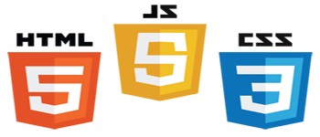

Programación Poli Fighters

Lenguaje de programación
Poli Fighters es un videojuego que utiliza el lenguaje de marcado HTML en su versión HTML5, hojas de estilo en cascada CSS3 y programado en lenguaje Javascript con el Framework Phaser.